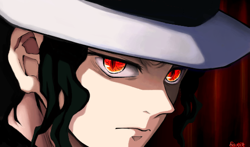

Kimetsu no Yaiba
Kimetsu no Yaiba (鬼滅きめつの刃やいば , Ki metsuKimetsu no YaibaYaiba?, lit. Lâmina (刃)Lâmina de Destruição (滅)Destruição de Onis (鬼)Onis), também conhecido pelo título em língua inglesa Demon Slayer (Matador de Demônios, em português) é uma série japonesa de mangá shōnen escrita e ilustrada por Koyoharu Gotōge. O mangá é serializado desde 15 de fevereiro de 2016 e foi encerrado em 18 de maio de 2020 na revista semanal Weekly Shōnen Jump, com seus capítulos sendo reunidos em 23 volumes tankōbon pela editora Shueisha. Uma adaptação de um mangá para um anime de 26 episódios, produzida pelo estúdio ufotable, teve sua 1ª temporada exibida entre 6 de abril e 28 de setembro de 2019,[1] e 2ª temporada, entre 10 de outubro de 2021 e 13 de fevereiro de 2022. Em setembro de 2019, foi divulgado que todos os volumes juntos da série já tinham excedido mais de 10 milhões de cópias vendidas. Em dezembro de 2019, o mangá já contava com mais de 25 milhões de cópias em circulação.
Enrredo
Ambientada no Japão durante o Período Taishō (1912-1926), a história gira ao entorno de Tanjirō Kamado, um garoto bondoso e inteligente que vive junto com sua mãe e seus irmãos, ganhando dinheiro vendendo carvão, assim como seu falecido pai. Certo dia, ao voltar para casa após ter ido a uma cidade vender carvão, Tanjiro descobre que toda sua família foi atacada por onis, sendo que uma de suas irmãs, Nezuko, é a única que sobreviveu ao ataque. Nezuko então passa a ser um oni, mas ela surpreendentemente ainda demonstra sinais de emoções e pensamentos humanos. Tanjirō decide então se tornar um caçador de onis, e com a ajuda de Nezuko, passa a sair em jornadas pelo Japão a fim de impedir que a mesma tragédia que afetou sua família aconteça com outras pessoas, enquanto que ele busca uma maneira de tornar Nezuko humana novamente.
Personangens Principais
Tanjirō Kamado
Tanjirō é o filho mais velho de um vendedor de carvão. Sua família inteira foi massacrada por um demônio enquanto ele vendia carvão numa cidade, com apenas sua irmã Nezuko sobrevivendo, porém se transformando em oni. Seu objetivo é encontrar uma cura para ela e transformá-la de volta em um humana, e é para esse fim que ele decide se juntar à Ki-satsutai (鬼殺隊? lit. "Organização dos Aniquiladores de Demônios"). Inicialmente, Tanjirō treinou por cerca de dois anos com Urokodaki, aprendendo o estilo de batalha "Respiração da Água" (水の呼吸法 Mizu no Kokyū-hō?), e a aprimorando desde então. Posteriormente, Tanjirō começa a utilizar uma técnica ancestral de sua família, a Hinokami Kagura (ヒノカミ神楽? lit. "Dança do deus do fogo"), como uma forma mais poderosa de batalha, mas depois a fundiu com as técnicas de Respiração Aquática para criar um estilo de batalha mais eficiente. Seu crânio é extremamente duro, o que o permite utilizar sua cabeça para golpear oponentes. Tanjirō ainda possui um olfato extremamente aguçado, fazendo com que ele detecte a presença de demônios e até mesmo emoções de pessoas. Ele é um garoto de bom coração e muitas vezes sente simpatia pelos demônios e suas vítimas. Seu otimismo sem fim e sua natureza simples geralmente fazem com que as pessoas gostem de sua companhia, mas, ao mesmo tempo, também o coloca em desacordo com outras pessoas. Tanjirō utiliza uma katana solar de cor preta.
Nezuko Kamado
Nezuko é a irmã mais nova de Tanjirō. Ela estava com seus familiares quando foram atacados e mortos por um demônio. Só ela sobreviveu, mas o ataque a deixou transformada em um demônio também. No entanto, ao contrário dos outros demônios, Nezuko conseguiu manter de alguma forma a sua consciência anterior, o que lhe permitiu reconhecer Tanjirō como seu irmão e não machucá-lo. Uma técnica de hipnose de Urokodaki fez com que Nezuko passasse a ver todos os humanos como seus familiares, o que a ajudou a se tornar um demônio que não consome carne humana. Como alternativa a não comer carne humana, Nezuko se recupera de seus ferimentos através do sono. Ela é incapaz de falar como um demônio, sendo obrigada a utilizar uma mordaça de bambu como precaução para não morder alguém. Assim como outros demônios, Nezuko é capaz de se regenerar, atacar com força sobre-humana e aumentar ou diminuir rapidamente o tamanho de seu corpo. Tanjirō geralmente a carrega em suas costas dentro de uma caixa de madeira feita por Urokodaki, pois a luz do sol certamente iria incinerá-la.
Zenitsu Agatsuma
Zenitsu é um garoto covarde e medroso que se juntou ao Ki-satsutai na mesma época que Tanjirō. Ele treinou e se especializou no estilo de batalha "Respiração do Trovão" (雷の呼吸法 Kaminari no Kokyū-hō?) através do seu avô, um hashira do trovão veterano; contudo, Zenitsu só foi capaz de aprender a primeira técnica (a Respiração do Trovão possui 6 técnicas) e, por causa disso, muitas vezes ele menospreza a si mesmo, apesar do fato de que ele é talentoso, pois sempre procurou aperfeiçoar ao máximo a primeira técnica. Zenitsu possui também uma excelente audição. Ele se une a Tanjirō em uma missão e, desde então, ele passa a acompanhá-lo, em parte porque acha Nezuko bonita. Sua personalidade covarde inicialmente o atrapalha, e ele só é capaz de lutar quando está em situações de risco excepcionais; contudo, mais tarde ele aprende a afastar seus medos e agir quando necessário. Zenitsu utiliza uma katana solar de cor dourada.
Inosuke Hashibira
Um jovem garoto que foi criado por um javali selvagem, Inosuke utiliza um estilo autodidata chamado "Respiração das Feras" (獣の呼吸法 Kemono no Kokyū-hō?), juntamente com duas espadas serrilhadas em batalha. Quando ele recebe novas espadas, ele propositadamente as tornam serrilhadas, a fim de combinar com sua preferência e estilo de luta. Ele é impetuoso e propenso a reagir violentamente e, embora pareça sombrio, provou-se um caçador hábil em batalhas repetidas vezes. Ele é extremamente musculoso e robusto, o que contrasta com o seu rosto estranhamente afeminado, que ele normalmente esconde sob a cabeça de um javali empalhado. Quando ele conhece Tanjirō, ele o trata como um inimigo por sua determinação em proteger Nezuko, um demônio; todavia, os dois rapidamente se tornam amigos e passam a batalharem juntos. Ele costuma desafiar Tanjirō para competições aceitas de bom humor. Ele fez o teste de admissão para o Ki-satsutai ao mesmo tempo que Tanjirō e Zenitsu e aparentemente foi o primeiro a concluí-lo. Suas katanas são cinza-violeta e ele utiliza seu apurado senso de tato para detectar inimigos à longas distâncias.

Hashiras
O anime nos apresentou a um mundo no qual demônios ameaçam a vida de humanos com frequência. Para enfrentá-los, a organização Demon Slayer Corps reúne e treina os mais corajosos caçadores de demônios. E à frente de toda a organização, estão os 9 combatentes mais fortes e poderosos dentre todos os caçadores: os Hashiras. Também conhecidos como "Pilares", cada Hashira possuiu um estilo de respiração (poder) específico e é encarregado da patrulha de uma região, para protegê-la e para reunir informações sobre os demônios. Além disso, alguns deles atuam como professores ou mentores dos caçadores em treinamento.
- Hashira da Água - Giyu Tomioka
- Hashira do Inseto - Shinobu Kocho
- Hashira do Vento - Sanemi Shinazugawa
- Hashira do Amor - Mitsuri Kanroji
- Hashira da Cobra - Obanai Iguro
- Hashira da Pedra - Gyomei Himejima
- Hashira do Som - Tengen Uzui
- Hashira das Chamas - Kyojuro Rengoku
- Hashira da Névoa - Muichiro Tokito
Luas Superiores
Kimetsu está atualmente em sua terceira temporada, com os fãs acompanhando Tanjiro e seus companheiros embarcando em novas aventuras e a introdução de novos demônios das Luas Superiores, os grandes vilões do anime, também conhecidos como Os Doze Kizuki. Os Doze Kizuki são divididos em dois grupos, os escalões inferiores e os superiores, e são demônios poderosos criados por Muzan Kibutsuji, o grande antagonista da série. Eles são seres humanos que foram infectados com uma porção do sangue de Muzan, passando por uma transformação e recebendo poderes especiais
No entanto, os seis demônios das Luas Inferiores foram considerados muitos fracos por Muzan e então descartados por ele, que estava frustrado com as suas falhas constantes, evento que ocorreu ainda na primeira temporada do anime. Enmu, o demônio da Lua Inferior Número 1, foi o único que Muzan deixou vivo, dando outra chance para matar Tanjiro. Após a morte de Enmu em Mugen Train, Muzan encerrou a existência da Lua Inferior para sempre e começou a utilizar apenas os membros do alto escalão das Luas Superiores. Alguns desses demônios estão na ativa há séculos já matando dezenas de pessoas e Hashiras, que são os exterminadores de demônios mais poderosos do anime.
- Lua Superior 6 - Daki e Gyutaro
- Lua Superior 5 - Gyokko
- Lua Superior 4 - Hantengu
- Lua Superior 3 - Akaza
- Lua Superior 2 - Doma
- Lua Superior 1- Kokushibou
Por último, mas não menos importante
Muzan Kibutsuji
Muzan Kibutsuji é um demônio, o primeiro de sua espécie, o progenitor de todos os outros demônios, sendo o principal antagonista de Kimetsu no Yaiba. Ele também é o Demônio responsável por massacrar a maioria da família Kamado e transformar Nezuko Kamado em Demônio. tendo existido por mais de 1000 anos e enfrentado os Caçadores de Demônios por séculos. Mesmo enquanto severamente enfraquecido conseguiu enfrentar vários pilares e caçadores de nível semelhante.
Muzan é de coração frio, cruel e excepcionalmente inteligente. Ele não vê valor em nenhum humano que encontrou e mostra pouco valor em seus próprios subordinados. Raramente sendo visualmente chateado ou feliz, ele parece completamente monótono e desapegado na maioria das ocasiões, mesmo quando mata insensivelmente seus próprios subordinados.
